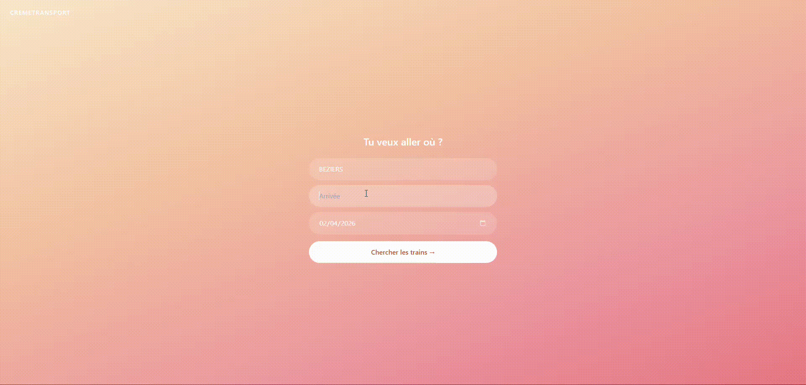

Crème Transport
(En cours)
MaxJeune est un abonnement de la SNCF destiné aux jeunes voyageurs, permettant de bénéficier de billets à 0 euro sur certains trajets en train.
Dans le cadre de ce projet, je développe une application qui vise à simplifier la recherche d'itinéraires associés à cet abonnement.
L'objectif final est de créer un calculateur d'itinéraires permettant à l'utilisateur de saisir une gare de départ, une gare d'arrivée et une date, afin d'obtenir les trajets disponibles de manière simple et rapide.
Le projet repose sur une architecture web complète avec un backend développé en Python à l'aide de FastAPI, permettant de construire une API REST. Cette API est connectée à l'API ouverte de la SNCF, qui fournit les disponibilités des trains éligibles à l'abonnement Max Jeune.
L'ensemble est ensuite relié à une interface web en HTML, Tailwind et JavaScript afin d'offrir une interaction fluide et en temps réel avec l'utilisateur.

